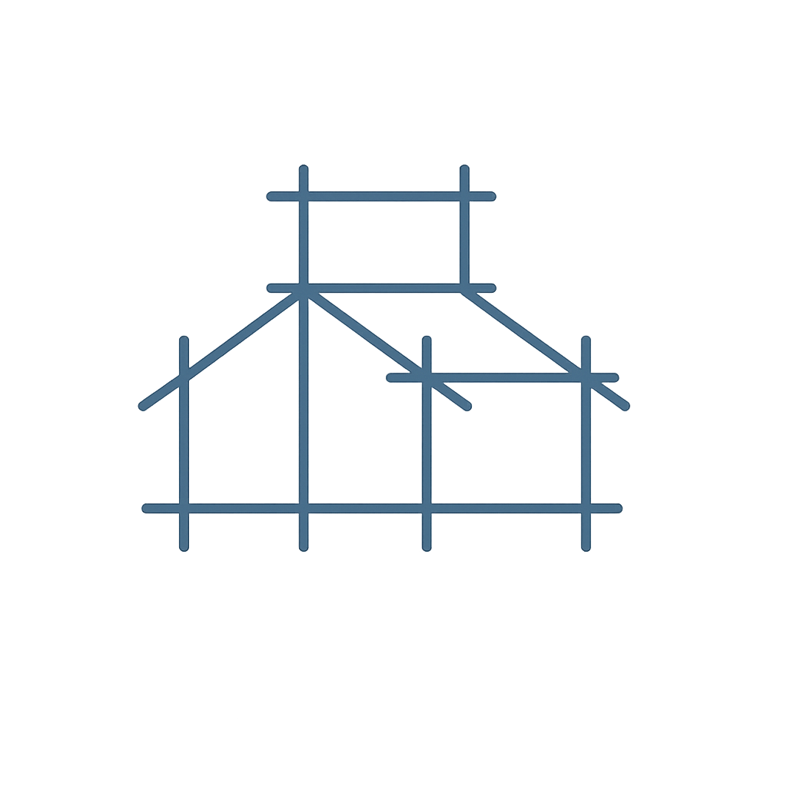
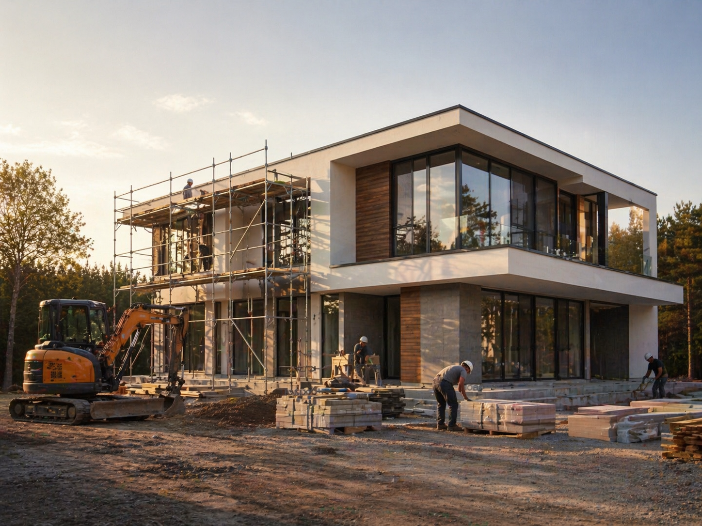

Прозрачная смета
Фиксируем состав работ и материалов до старта, чтобы бюджет был понятен заранее.

АДАМАНТ +7 (911) 197-04-57«Адамант Строй» проектирует и строит современные частные дома под ключ в Санкт-Петербурге и Ленинградской области.
Мы ведем клиента от первой консультации и расчета сметы до сдачи готового дома: фиксируем состав работ, подбираем материалы и контролируем ключевые этапы строительства.

Фиксируем состав работ и материалов до старта, чтобы бюджет был понятен заранее.
Проектировщики, инженеры и строители работают в общей логике проекта.
Проверяем ключевые этапы строительства и документируем ход работ.
Коротко о том, что обычно важно до начала проекта.
Предварительный расчет готовим за 1 день после уточнения задачи, участка, площади и выбранной технологии строительства.
Нет. Помимо строительства домов под ключ, мы выполняем ремонт квартир и отделку коммерческих помещений.
Да. Мы можем оценить готовый проект, проверить решения и подготовить смету по вашим чертежам.
Работаем в Санкт-Петербурге и Ленинградской области. Конкретные условия выезда обсуждаем на консультации.